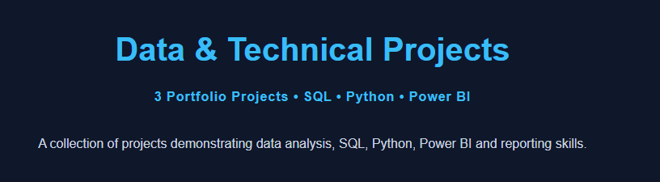
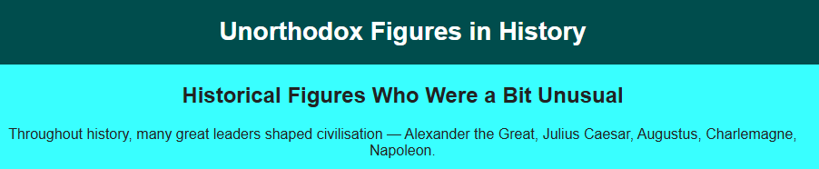
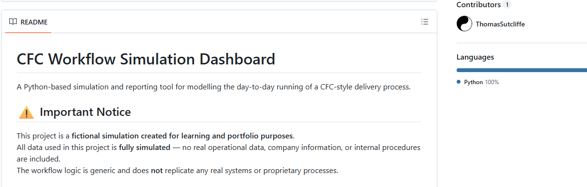

Thomas Sutcliffe
Aspiring Data Technician & Data Analyst
A diligent and resilient individual eager to learn, develop new skills, and grow within the IT field, open to fields in Data Analysis and Software Development.
Project Dashboard

Data & Technical Projects
Examples of SQL, Power BI, and technical analysis
projects showcasing data handling, reporting, and
problem-solving skills.

History Website Project
A multi-page HTML and CSS website exploring historical
figures, historical interpretation, and source bias.
Built as an independent web development project and
published through GitHub.

Python Workflow Simulation
Workflow logic demonstration with a README explaining the process.
Read OverviewIT Support Guides
A collection of troubleshooting notes and technical
support guides covering common IT issues,
diagnostic processes, and documentation practices.
Contact
@email : sutcliffe.je.thomas@gmail.com
Any inquiries, please drop an email and I will get back to you as soon as possible.